Contents
Ejemplo 6.2 Lathi
Encontrar la serie exponencial compleja y trigonométrica compacta de la siguiente señal
f=@(t) (2*t).*(abs(t)<=1/2) + (2*(1-t)).*((t>1/2)&(t<3/2)); t = (-5:0.001:5); figure (20) plot(t,f(t),'LineWidth',4); grid on;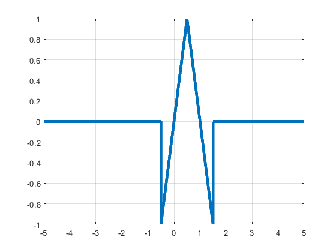
Serie de Fourier exponencial compleja
d0=0; dn=@(n) (4/((n^2).*(pi^2))).*(sin((n*pi)/2)).*(exp((-pi/2)*j)); t0=-0.5; tf=1.5; f=@(t) (2*t).*(abs(t)<=1/2) + (2*(1-t)).*((t>1/2)&(t<3/2)); armo=15; a=-6; b=6; sfc(t0,tf,dn,d0,f,armo,a,b,100)
Warning: Imaginary parts of complex X and/or Y arguments ignored Warning: Imaginary parts of complex X and/or Y arguments ignored Warning: Imaginary parts of complex X and/or Y arguments ignored Warning: Using only the real component of complex data.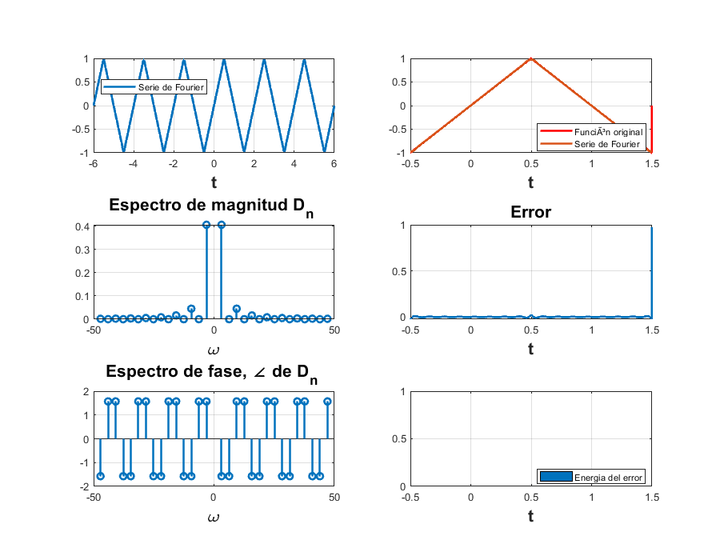
Serie de Fourier trigonometrica compacta
t0 = -0.5; tf = 1.5; cn = @(n) (8/((n^2).*(pi^2))).*sin((n*pi)/2); c0 = 0; phin = -pi/2; phi0 = 0; f = @(t) (2*t).*(abs(t)<=1/2) + (2*(1-t)).*((t>1/2)&(t<3/2)); armo = 15; a = -6; b = 6; sftc(t0,tf,cn,c0,phin,phi0,f,armo,a,b,110)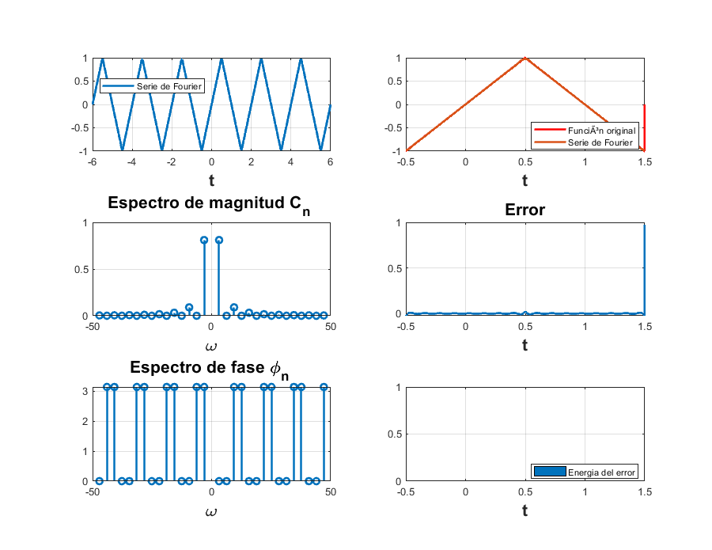
Ejemplo 6.4 Lathi
Encontrar la serie exponencial compleja y trigonométrica compacta de la siguiente señal
f=@(t) mod(heaviside(t+pi/2)-heaviside(t-pi/2),2*pi); figure (21) plot(t,f(t),'LineWidth',4); t = [-20:0.001:20]; axis([-10 10 -1.5 1.5]) grid on;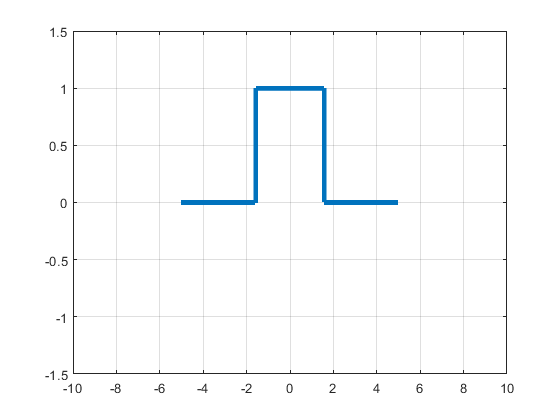
Serie de Fourier trigonometrica compacta
t0=-pi; tf=pi; f=@(t) heaviside(t+pi/2)-heaviside(t-pi/2); armo=15; a=-15; b=15; c0 = 1/2; phi0 = 0; cn = @(n) ((2*sin((n*pi)/2))/(pi*n)); phin =0; sftc(t0,tf,cn,c0,phin,phi0,f,armo,a,b,111) clc;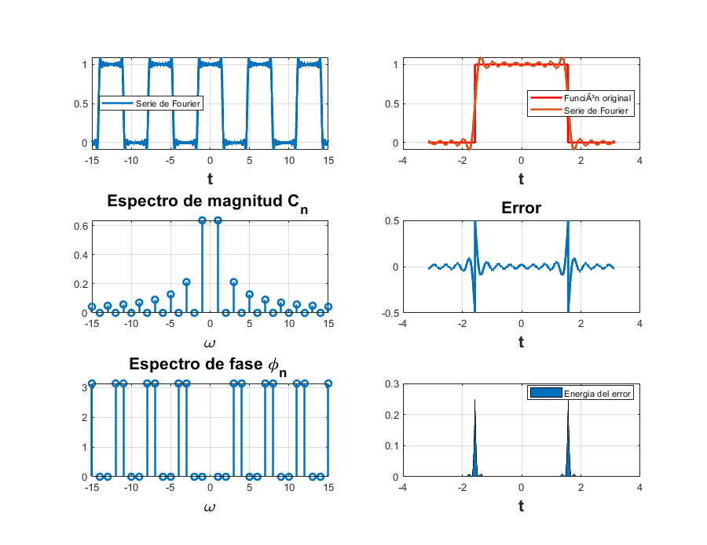
Serie de Fourier exponencial compleja
d0=1/2; dn=@(n) (sin((n*pi)/2)/(pi*n)); t0=-pi; tf=pi; f=@(t) heaviside(t+pi/2)-heaviside(t-pi/2); armo=15; a=-15; b=15; sfc(t0,tf,dn,d0,f,armo,a,b,101)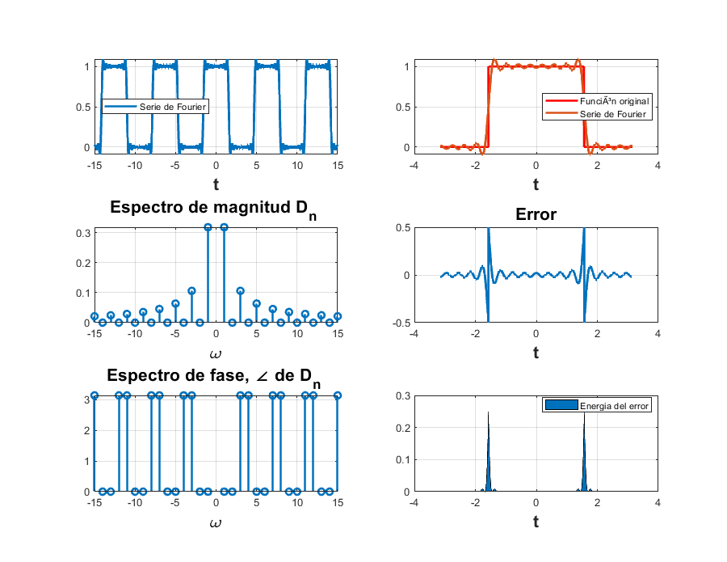
PR08-1
Encontrar la expresión de la serie de Fourier exponencial compleja y trigonométrica compacta de la señal f(t)=t en el intervalo [-1,1]
Serie de Fourier trigonometrica compacta
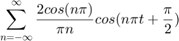
t0=-1; tf=1; f=@(t) t; armo=15; a=-6; b=6; c0 = 0; phi0 = 0; cn = @(n) (cos(n*pi))*(2/(pi*n)); phin =(pi/2); sftc(t0,tf,cn,c0,phin,phi0,f,armo,a,b,112)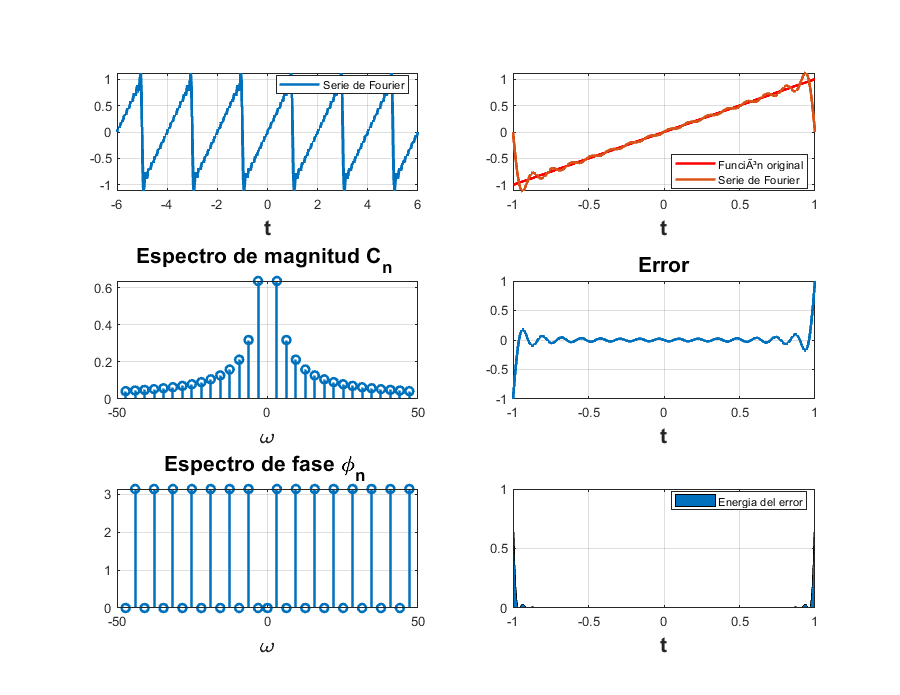
Serie de Fourier exponencial compleja
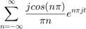
d0=0; dn=@(n) (((cos(n*pi)-sin(n*pi)/(pi*n))*(2/(pi*n)))*(j/2)); t0=-1; tf=1; f=@(t) t; armo=15; a=-6; b=6; sfc(t0,tf,dn,d0,f,armo,a,b,102)

PR08-2
Encontrar la expresión de la serie de Fourier exponencial compleja y trigonométrica compacta de la señal f(t)=t^2 en el intervalo [-2,2]
Serie de Fourier trigonometrica compacta
t0=-2; tf=2; f=@(t) (t.^2); armo=15; a=-8; b=8; c0 = 4/3; phi0 = 0; cn = @(n) (16*cos(n*pi))/((n.^2)*(pi^2)); phin = 0; sftc(t0,tf,cn,c0,phin,phi0,f,armo,a,b,113)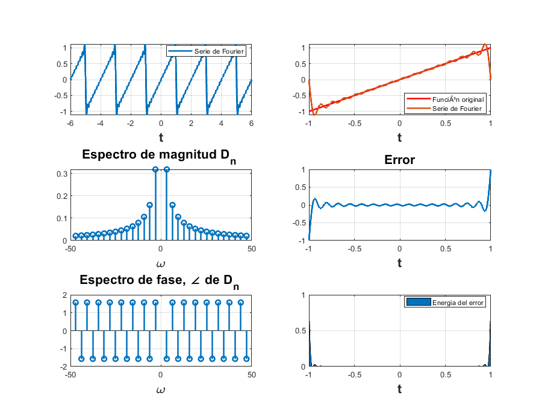 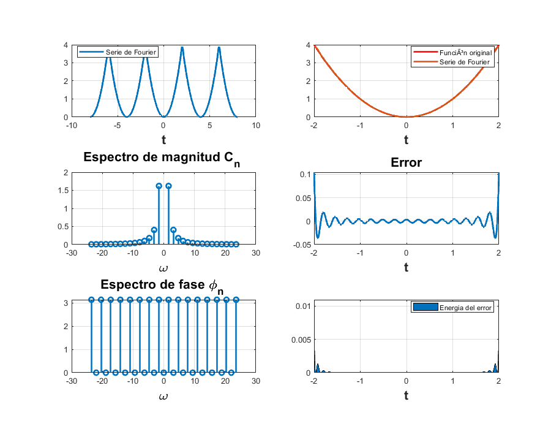
Serie de Fourier exponencial compleja
d0=4/3; dn=@(n) (8*cos(n*pi))/((n.^2)*(pi^2)); t0=-2; tf=2; f=@(t) (t.^2); armo=15; a=-8; b=8; sfc(t0,tf,dn,d0,f,armo,a,b,103)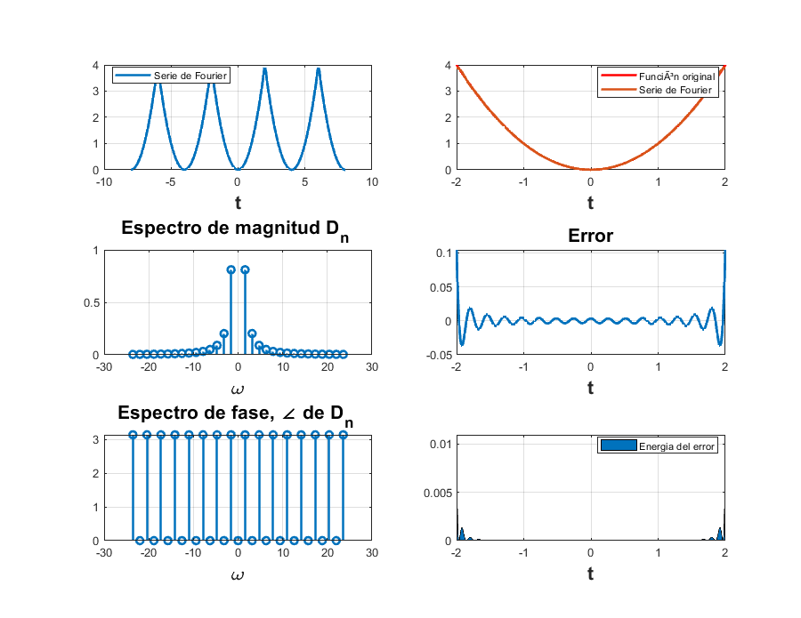
PR10
Encontrar la serie exponencial compleja y trigonométrica compacta de la siguiente señal
f=@(t) 2*exp(-2*abs(t)); t = [-5:0.001:5]; figure (23) plot(t,f(t),'LineWidth',4); grid on;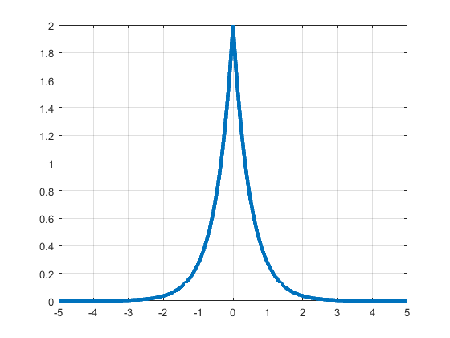
Serie de Fourier exponencial compleja
d0=0; dn=@(n) (4*(1-exp(-2)*cos(pi*n)))/(4+(pi^2)*n^2); t0=-1; tf=1; f=@(t) 2*exp(-2*abs(t)); armo=15; a=-6; b=6; sfc(t0,tf,dn,d0,f,armo,a,b,104)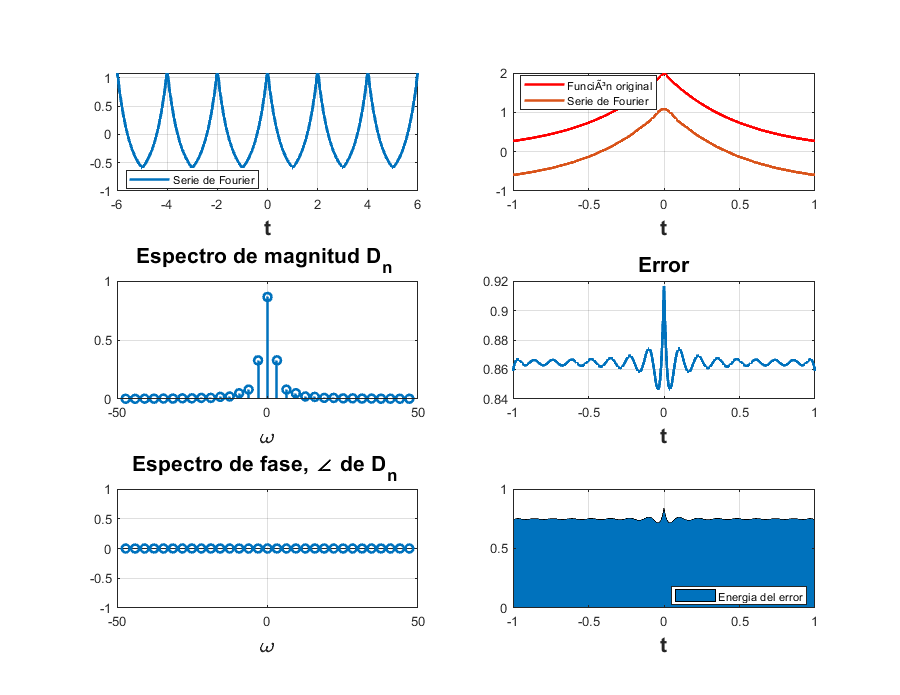
Serie de Fourier trigonometrica compacta
t0 = -1; tf = 1; cn = @(n) 2*(4*(1-exp(-2)*cos(pi*n)))/(4+(pi^2)*n^2); c0 = 0; phin = 0; phi0 = 0; f = @(t) 2*exp(-2*abs(t)); armo = 15; a = -6; b = 6; sftc(t0,tf,cn,c0,phin,phi0,f,armo,a,b,114)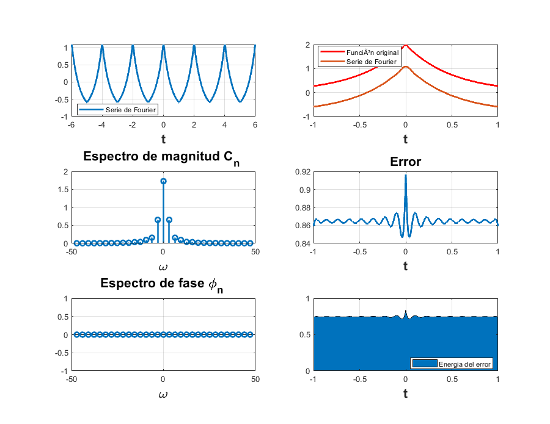